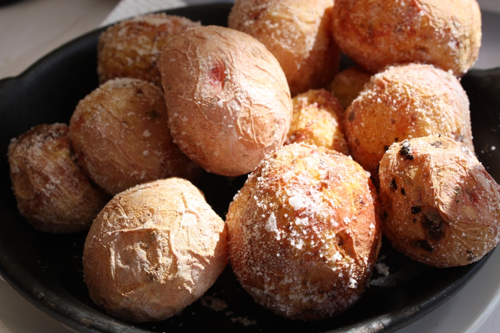

Papas Arrugadas

Papas Arrugadas by Javier Lastras
Description
Papas arrugadas is a traditional poor dish from the Canary Islads. Usually served along with salad and meat or fresh fished fish, and some Mojo sauce
Ingredients
- Small Potatoes
- Seasalt
- Water
Steps
- Wash the potatoes
- Put them in a pan and fill with water until they are covered
- Add salt
- Boil until you can stab a forch on them
- Remove the water
- COntinue cooking for a while until they are dry